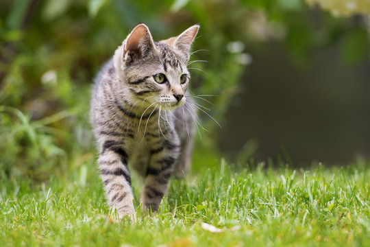
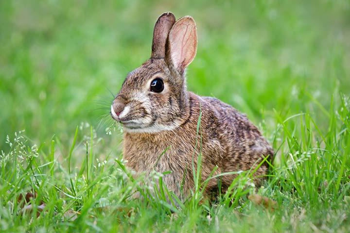
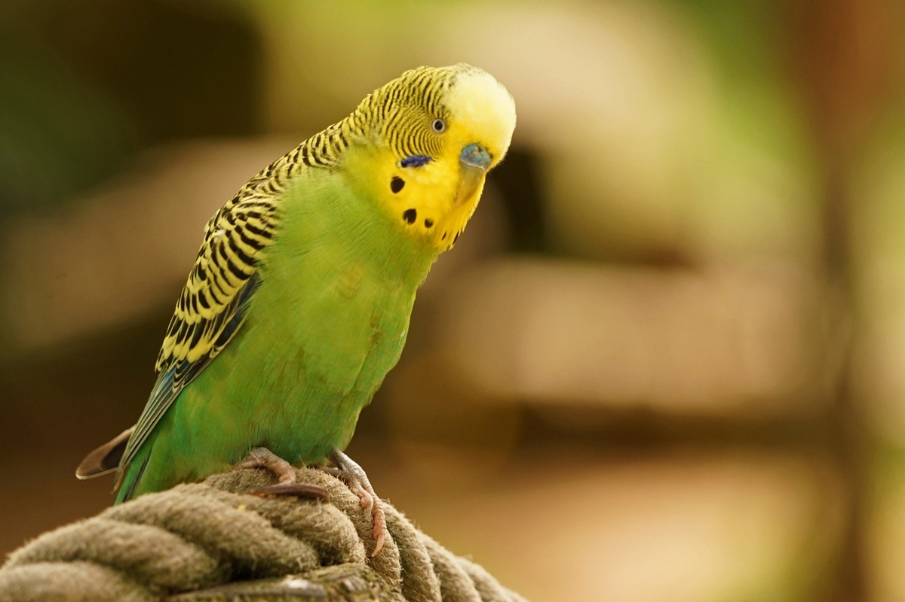
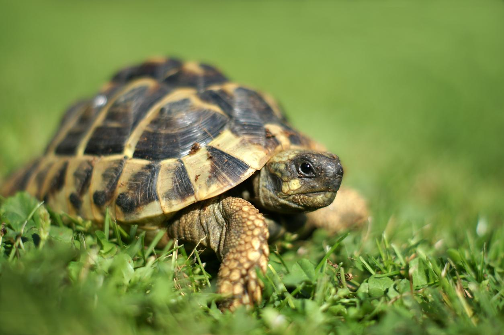

Katzen
Die Katze ist ein beliebtes Haustier, bekannt für ihre Geschicklichkeit und Unabhängigkeit.
Hunde

Der Hund gilt als treuer Begleiter des Menschen und wird oft als „bester Freund des Menschen“ bezeichnet.
Hasen
Der Hase ist ein flinkes, pflanzenfressendes Tier, das vor allem für seine langen Ohren bekannt ist.
Wellensittiche
Der Wellensittich ist ein farbenfroher Vogel, der gerne in Schwärmen lebt und ein beliebtes Haustier ist.
Schildkröten
Die Schildkröte ist ein friedliches Reptil mit einem schützenden Panzer, das sowohl an Land als auch im Wasser leben kann.